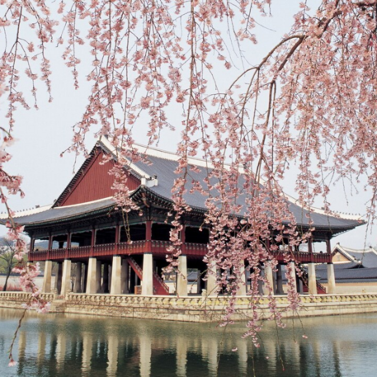

Gyeongbokgung Palace (Seoul)
The grandest of Korea’s Five Palaces, showcasing traditional Joseon dynasty architecture and history.
Nearby Hotels:
-
Four Seasons Hotel Seoul – 0.5 km
(4.9)
💲280 / night
-
Shilla Stay Gwanghwamun – 0.8 km
(4.3)
💲150 / night
-
Lotte Hotel Seoul – 1.2 km
(4.7)
💲220 / night
Jeju Island
UNESCO World Heritage site with volcanic landscapes, waterfalls, and the iconic Hallasan Mountain.
Nearby Hotels:
-
LOTTE Hotel Jeju – 2 km
(4.8)
💲260 / night
-
Shilla Jeju Hotel – 2.5 km
(4.5)
💲240 / night
-
Jeju Sun Hotel & Casino – 5 km
(3.9)
💲120 / night
Namsan Seoul Tower
An iconic tower offering panoramic views of Seoul, especially stunning at night.
Nearby Hotels:
-
Grand Hyatt Seoul – 0.9 km
(4.6)
💲200 / night
-
Orakai Daehakro Hotel – 1.5 km
(3.7)
💲110 / night
-
The Plaza Seoul Autograph Collection – 2 km
(4.8)
💲230 / night